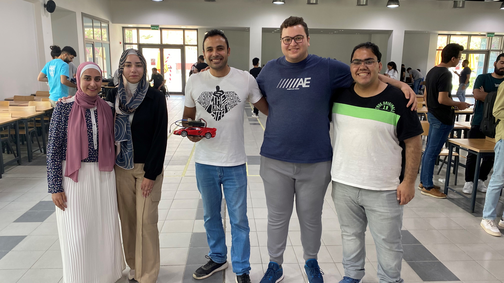
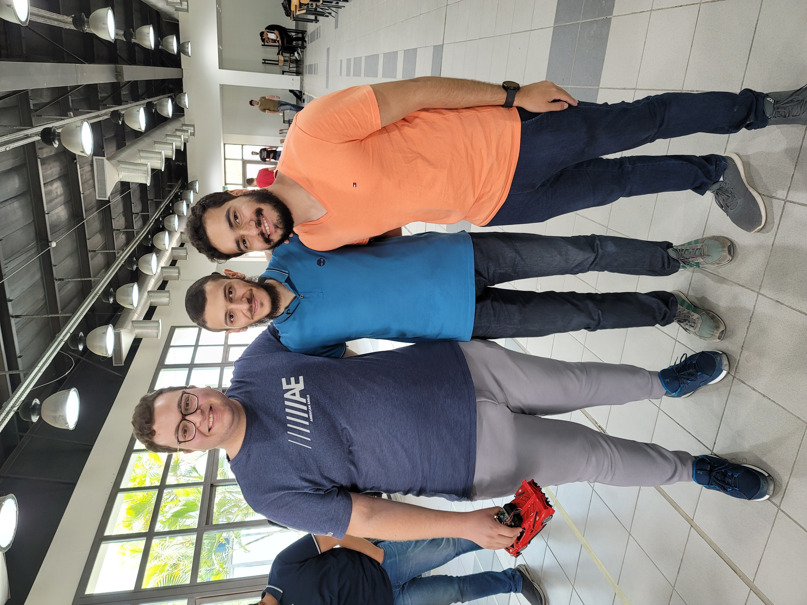

Origin
Fayrouza was part of my autonomous systems course at the GUC. The course introduced autonomous systems and their five main challenges: locomotion, navigation, localization, mapping, and control. The course covered several models of vehicles, such as differential drive and Ackermann. Numerous path planning techniques were also explored, including BFS, DFS, A*, wavefront, and others. Finally, it presented the Kalman filter and demonstrated its effectiveness in filtering sensory input. Fayrouza is a single ROS-enabled vehicle that includes all of these ideas and more.

Fayrouza team with the course instructor, Dr. Omar Shehata, and TA, Eng. Mohammed Shaaban

Components
Fayrouza is a locally purchased toy car that my team and I hacked by removing the existing circuitry and adding our own. For speed control, we added an H-bridge for pulse width modulation (PWM) of the DC motor and an encoder to calculate the motor's RPM. For heading control, we used a micro servo and an IMU. To control both motors, we used a decentralised control structure consisting of an Arduino Nano and a Raspberry Pi 4 with 2 gigs of RAM. The encoder and IMU were connected to the Pi to run ROS, calculate the heading and RPM, and send the actuating signals to the Arduino.

Software
Fayrouza is programmed using ROS, a set of powerful software libraries and tools to help build robot applications. ROS is incredibly popular and relied upon throughout the robotics industry. It's multi-domain, multi-platform, completely open-source, and has a massive global community. Alongside ROS, other powerful Python libraries were used, such as Numpy for mathematical operations and pyFirmata for communication between the Pi and Arduino.
Lane Keeping Maneuver
Lane Shifting Maneuver
Autonomous Vehicles Exhibition

